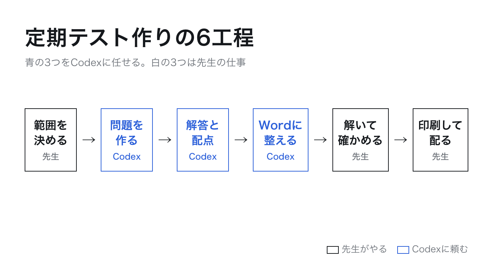

1
テスト作りを6つに分ける
はると先生
定期テストって、AIに全部任せていいものなんですか。作らせたことはあるんですけど、そのまま配るのはさすがに怖くて。
とざき先生
全部は任せません。テスト作りを6つの工程に分けると、任せるのは真ん中の3つです。両端は先生にしかできない仕事です。

とざき先生
最初の「範囲を決める」は、授業をした先生にしか分かりません。どこまで進んだか、どこでつまずいている子が多いか。最後の「解いて確かめる」も同じで、AIの答えは間違うことがあるので、配る前に自分で全問解きます。この2つを手放さなければ、あとの3つは安心して任せられます。
はると先生
問題を考える時間より、Wordに打ち込んで解答用紙を作る時間のほうが長いんですよね。そこを任せられるだけでも助かります。
2
チャットのAIとCodexの違い
はると先生
ChatGPTでも問題は作れますよね。Codexだと何が違うんですか。
とざき先生
チャット画面のAIは、文章を返してくれるところまでです。そこからWordに貼って、体裁を整えて、解答用紙を別に作るのは自分の手になります。Codexは、パソコンの中の指定したフォルダで、ファイルそのものを作ってくれます。問題用紙・解答用紙・模範解答の3つのWordファイルが、フォルダの中にできあがります。
- チャットのAI
- ChatGPTやGeminiのチャット画面。質問すると文章で答える。問題文を作ってもらい、自分でWordに貼って整える。
- Codex
- OpenAI社のAIで、ChatGPTの有料プランに含まれる。指定したフォルダの中でファイルを作ったり直したりする。Wordファイルを3つ作り、間違いを見つけたら日本語で頼んで直させる。
とざき先生
もう1つ大事な違いがあります。Codexは、指定したフォルダの外には手を出しません。テスト用のフォルダを1つ作って、そこだけで仕事をさせます。だから、そのフォルダに名簿や答案を入れなければ、生徒の情報がAIに渡ることもありません。
3
問題の質は範囲メモで決まる
はると先生
「中2の一次関数のテストを作って」と頼むだけじゃだめですか。
とざき先生
それでもテストらしいものは出てきます。でも、それは「どこかの中2」のテストです。自分のクラスのテストにするために、範囲メモを1枚書きます。どの単元をどこまでやったか。生徒がどこでつまずいているか。数行でかまいません。この数行があるかないかで、出てくる問題がまるで変わります。
私が範囲メモに必ず書くのは3つです。①単元名を自分の言葉で ②授業で扱った内容の範囲 ③生徒のつまずき。とくに③を書くと、Codexはそこを確かめる問題を厚めに作ってくれます。書き方は第2回で、実際のメモをそのままお見せします。
4
この講座で作るもの
とざき先生
見本は、中学2年 数学の2学期中間テストにします。範囲は一次関数。50分・100点満点で、前半が知識・技能、後半が思考・判断・表現の問題です。第3回で、頼んだ言葉の原文から、Codexの返事、できあがったWordファイルまで、1本まるごとお見せします。
はると先生
数学以外の教科でも同じ手順でいけますか。
とざき先生
手順は同じです。変わるのは範囲メモの書き方だけで、そこは第4回で触れます。ただし1つだけ先に言っておくと、国語や英語で教科書の本文を貼って「これで問題を作って」とは頼みません。理由は第5回でお話しします。
やってみよう
次の定期テストの範囲を、紙に3行で書き出してください。単元名、授業でやった範囲、生徒がつまずいているところ。次回、この3行が範囲メモになります。